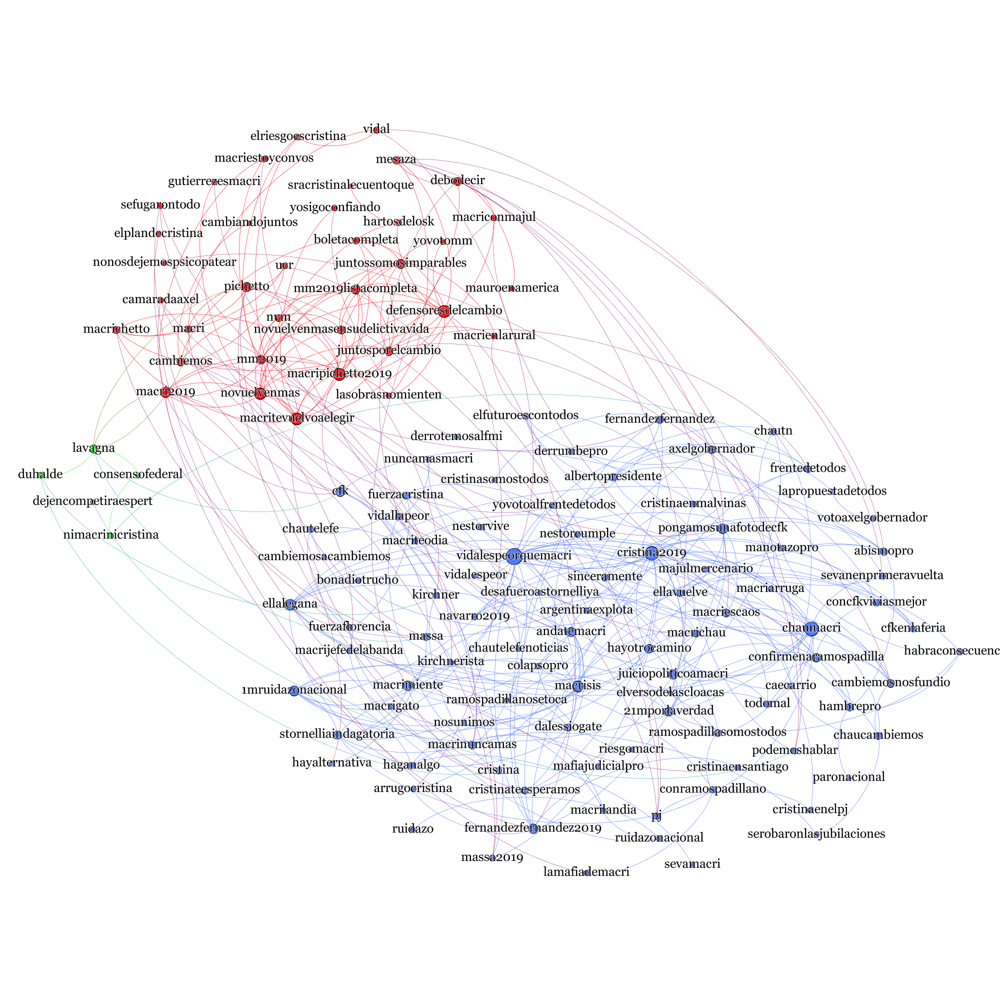

Zhenkun Zhou 👨🏻💻
Zhenkun Zhou 周振坤 is an assistant professor in Capital University of Economics and Business. He received his Ph.D. degree of computer science from Beihang University in 2020 under supervision of Prof. Ke Xu. From 2018 to 2019, he visited the City University of New York in USA.
His research focuses on computational social science, social networks and machine learning（研究方向：计算社会科学，社交网络，机器学习）.
Selected Publications

Homophily of Music Listening in Online Social Networks of China
Social Networks, Volume 55, October 2018, Pages 160-169

Artificial intelligence for elections: the case of 2019 Argentina primary and presidential
election


Tales of Emotion and Stock in China: Volatility, Causality and Prediction
World Wide Web, 2017.

Can Online Emotions Predict the Stock Market in China?
Web Information Systems Engineering (WISE), 2016.
*Best Paper award honorable mention
Working Projects

Russian trolls on Twitter during the 2016 U.S. President Election

Losses Loom Larger than Gains in Social Media
This research investigates the association between stock market and corresponding online behaviors in
social media. It is revealed that people are not only sensitive to losses than to gains, but also attach
great importance to losses, which
demonstrate the robustness of the sensitive and attentional effect of losses.
Online Applications

Live Daily Prediction Using Artificial Intelligence
Through collecting a massively large number of tweets and building machine learning models, Zhenkun Zhou and
Hernan Makse investigate the dynamics of the Twitter social network formed by the interactions among
millions of Twitter supporters. We then infer the opinion of each user with Artificial Intelligence on the
candidates of the 2019 Argentina presidential election.

SONG IS U
This project is collecting kinds of real-time data in Netease Music platform, including the massive user
listening behaivor.
Through online analyzing the indivdual and collective listening records, we uncover ''WHO ARE U'' in
music.

Stock Prediction System with SVM-ES
The system applies the SVM based on online emotions to predict the price and volume of stock market in
China.
It provides the prediction results to Company of Warming Technology for paid service.
Services

Journal Reviewer
Royal Society Open Science; Scientific Reports; Cyberpsychology, Behavior, and Social Networking; PLoS One; IEEE Transactions on Big Data; Journal of Computational Social Science
Happy Birthday to Danni~